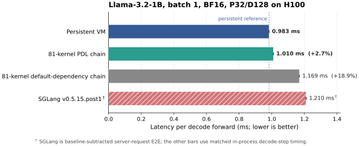

TL;DR: With programmatic dependent launch (PDL), an 81-kernel non-persistent CUDA Graph reaches 97.4% of the persistent path's end-to-end throughput on H100, using the same BF16 ThunderKittens operators.

Hazy Research's megakernel [1] makes a compelling argument: when a batch-one decode is split into roughly a hundred kernels, the GPU repeatedly stops loading weights, drains a grid, and starts again. Their solution is to keep one CTA resident on each SM and interpret the entire model as a stream of instructions.
We wanted to ask the inverse question:
So we took the megakernel apart. We kept its original operator bodies and model geometry, but replaced the resident interpreter with a chain of independently launched CUDA kernels connected by PDL. Each autoregressive position executes its own CUDA graph for the same 16-layer Llama-3.2-1B body.
The result is closer than we expected.
The Scoreboard
The headline comparison follows the workload from Hazy's original Figure 1: a 32-token prompt and 128 generated tokens, with verified real model weights. It walks the full generation trajectory, including embedding, LM head, argmax, and token publication.
| Implementation | End-to-end latency | Delta vs. persistent |
|---|---|---|
| Persistent VM | 983.127 us | reference |
| PDL kernel chain | 1009.711 us | +2.704% |
| Default-dependency kernel chain | 1169.071 us | +18.9% |
| SGLang v0.5.15.post1 | 1210.353 us | different timing scope |
What Exactly Did We Split?
At each transformer layer, the persistent program executes five active instructions:
1 RMSNorm + QKV projection + RoPE/KV append
2 attention
4 output projection
5 RMSNorm + up/gate projection + SiLU
6 down projection
-> next layer's opcode 1Opcode 3 is inactive for this decode schedule. Across 16 layers, that gives 80 transformer operators; the LM head is node 81.
The persistent implementation launches one CTA per H100 SM. Loader and consumer warps remain alive across operator boundaries, shared-memory buffers are recycled by an on-device allocator, and a resident scheduler hands each SM its next instruction. Most importantly, the loader for instruction i + 1 can begin fetching weights while instruction i is still finishing.
Our direct entries reuse the original ThunderKittens opcode bodies: the same GEMV computations, TMA transfers, shared-memory stages, reductions, and BF16 outputs. We removed the interpreter, on-device shared-memory allocator, runtime opcode dispatch, and cross-op counters. Every operator then became a normal kernel node in a CUDA Graph.
That left one problem: normal CUDA Graph dependencies serialize whole grids.
Kernel Boundaries Blow a 190-Microsecond Hole
Both sides already use CUDA Graphs, with each timed decode step submitted as one graph launch. The gap is therefore not CPU overhead.
In the real-weight matched-scope harness, default CUDA Graph dependencies, which wait for each predecessor grid to finish, make the split transformer body, without the LM head, take 967.162 us. Its paired persistent body takes 776.942 us. Simply turning the megakernel into separate grids therefore opens a 190.220 us gap.
The resulting 190.220 us gap reflects grid admission and drain, CTA and barrier initialization, loss of resident state, and the disappearance of cross-operator weight loading.
PDL gives us a way to reconstruct the most important part of that schedule. NVIDIA's programming model [2] lets a successor grid launch before its predecessor has finished. The successor can perform independent setup, then wait before it consumes the predecessor's output.
The Two-Line Trick That Recovered 158 Microseconds
Each edge needs two events:
- The producer calls
cudaTriggerProgrammaticLaunchCompletion()after it has issued, but not necessarily completed, its own weight loads. This makes the successor eligible while the producer continues. - Once admitted, the consumer issues its own independent weight or KV loads, then calls
cudaGridDependencySynchronize()only when it reaches the first read of the producer's activation.
In a fresh matched trigger-timing ablation, the trigger originally sat after the producer's final weight TMA arrived. Moving it to the point where that TMA had merely been issued recovered 34.032 us by itself. The earlier release gives the consumer more time to hide its own weight-load latency.
We measured the default-dependency and PDL configurations in separate paired experiments, each with a persistent control from the same fresh process:
| Dependency scheme | Split body | Paired persistent body | Gap |
|---|---|---|---|
| Default CUDA Graph dependencies | 967.162 us | 776.942 us | 190.220 us |
| PDL | 809.626 us | 777.123 us | 32.503 us |
The per-edge ablation shows that no single edge class carries the result:
| PDL edge enabled in isolation | Saved vs. default-dependency control |
|---|---|
| QKV → attention | 20.518 us |
| attention → O projection | 32.673 us |
| O projection → up/gate | 22.417 us |
| up/gate → down projection | 40.610 us |
| down projection → next-layer QKV | 42.203 us |
| all 79 edges | 153.980 us |
PDL Rides the Tail Wave
At first, this result seems impossible. The accepted kernels use 208 KiB of shared-memory storage and roughly 90 registers per thread. A 640-thread CTA is large enough that two of them cannot reside on the same H100 SM.
So where does the overlap come from?
We added %globaltimer and %smid records at CTA entry, load issue, trigger, dependency wait, and CTA exit. Across three instrumented runs:
- all 240 observed kernel boundaries admitted at least one successor CTA before the predecessor grid's last CTA exited;
- no successor CTA entered an SM before the predecessor CTA on that same SM had exited;
- the shortest observed same-SM retirement-to-admission delay was 0.256 us;
- 63 to 75 of the 80 boundaries in each run issued at least one successor weight or historical-KV load before the predecessor grid ended;
- no dependency wait returned before the predecessor grid completed.
PDL is therefore not forcing two huge CTAs to coexist. It is creating a rolling tail wave:
predecessor: [full grid work.............][straggling CTAs]
free SMs: ^ ^ ^ ^
successor: [admit][load][wait]...[compute]As predecessor CTAs retire unevenly, the successor fills the newly vacant SMs. Its loader warps can start fetching weights or historical KV while its consumer waits for the predecessor's activation. Grid-level correctness is preserved, but launch admission and independent memory traffic move off the critical path.
This is why we evaluate optimizations on the full chain. PDL's gain comes from the handoff between grids, which a standalone kernel benchmark does not measure.
Three Reasonable Ideas That Did Not Work
The remaining few percent invited several obvious optimizations. They were mostly traps.
1. Make two adjacent grids co-resident
The correct ThunderKittens body uses 208 KiB of shared-memory storage and a three-stage weight pipeline. A correct 80 KiB, single-stage version saves storage but slows the body from 804.409 to 841.180 us. That comparison changes the pipeline as well as admission, so it cannot tell us whether two adjacent grids on one SM would help.
So we built a mechanism-only control to ask a cruder question: if two adjacent grids could share an SM, roughly how much is on the table? The control is intentionally not a correct model kernel. It consumes only four of the original sixteen logical K partitions, and it inherits a reduced, cyclically aliased four-page shared-memory layout. The loader still issues all four weight TMA chunks, and the trigger remains at the same point, so the memory schedule is preserved while most of the arithmetic is not.
The two versions below launch the exact same device functions and SASS. The normal binding requests 65 KiB of dynamic SMEM and permits predecessor and successor CTAs to co-reside on an SM. The control requests 128 KiB of otherwise-unused dynamic SMEM, forcing one CTA/SM. Without PDL, the extra capacity is unused:
| Dependency scheme | Two CTAs/SM allowed | One CTA/SM forced | Cost of blocking |
|---|---|---|---|
| Default CUDA Graph dependencies | 891.970 us | 891.642 us | -0.328 us (-0.037%) |
| PDL on all 79 edges | 709.015 us | 760.016 us | +51.001 us (+7.19%) |
Treat that 51 us as a rough estimate of the opportunity, not as a number the correct model could collect. It is larger than the entire 26.584 us that the accepted chain still trails by, which is a good reminder of what the diagnostic is: a kernel that keeps all of its weight traffic but drops most of its arithmetic, so its CTAs are unusually short for their memory footprint and admission matters more to them than it would to the real thing. What the control does establish is a direction. Same-SM co-residency is a real term, and the correct kernels cannot reach it, because their registers and shared memory stay reserved until the entire predecessor CTA retires.
So we tried to make a correct kernel reach it.
2. Shrink a kernel until two grids fit
The only correctness-preserving way to buy co-residency is to lower the kernel's own footprint. We did that for opcode 4, the output projection plus residual. Each consumer warp's 128-column slice is streamed through a 16-column FP32 register tile; lanes 0-3 load two FP32 pairs per base tile from shared memory and broadcast them with warp shuffles. The BF16 weight TMA volume, the FP32 accumulation, and the original warp reduction are unchanged.
It works, on every axis we asked for:
- registers drop from 88 to 37 per thread, with zero stack, zero spills, and no
LDL/STLin the SASS; - the admission arithmetic clears. H100's 256-register allocation granule per warp rounds 37 registers per thread to an effective 40, or 25,600 registers per 20-warp CTA; two CTAs need 51,200 of the SM's 65,536. The original 88-register kernel needs 56,320 for one CTA and cannot admit a second;
- it is bit-exact against the extracted-TK reference in both eager and graph execution;
- and the co-residency actually happens. In the instrumented replay this variant records 1,714 of a possible 1,792 same-SM successor entries, about 119 to 128 per steady-state boundary. The original kernel records zero.
Then it loses anyway. On a 16-node opcode-4 PDL chain, allowing co-residency runs in 78.608 us; the same SASS launched with 128 KiB of SMEM padding, which blocks it, runs in 75.152 us. Their default-edge times differ by 0.080 us, so once again the padding is admission-only.
| opcode-4 chain, 16 layer weights | Default edges | PDL edges |
|---|---|---|
| original, one CTA/SM | 101.760 us | 71.024 us |
| micro-tiled, two CTAs/SM allowed | 105.280 us | 78.608 us |
| micro-tiled, same SASS, co-residency blocked | 105.200 us | 75.152 us |
The shrinking is not free either: standalone, the micro-tiled opcode 4 costs 101.632 us against 98.272 us over the same 16 layer weights, a 3.42% tax, or about 0.21 us per layer. So the correct kernel pays twice, once for the smaller tile and once for the contention its new roommate introduces.
That is the useful shape of the result. Every software knob that makes a correct kernel co-residable — fewer pages, fewer warps, fewer registers, smaller tiles — also changes its throughput, so we cannot price the opportunity cleanly from inside the kernel.
3. Rebuild tile-level dependencies with virtual tensor parallelism
Megakernels can schedule dependent work below an operator boundary. In Hazy's original Llama-1B megakernel [1], the up/gate projection produces its intermediate activation in four chunks, and the corresponding down-projection work waits on four separate counters rather than on the whole tensor. MPK [3] expresses related opportunities with SM-level task graphs, while Event Tensor [4] represents dependencies between tiled tasks.
We observe that this schedule mirrors tensor parallelism without distributing the model across GPUs. We define virtual tensor parallelism (VTP) as a single-GPU execution pattern that partitions an intermediate tensor into logical shards, pairs each producer shard with its matching consumer shard, and synchronizes each pair independently.
The ranks in VTP are virtual: they are logical units of work mapped to SMs, not separate devices. Unlike conventional tensor parallelism, VTP introduces no inter-GPU collective. Its purpose is also different. It does not add aggregate compute capacity; it narrows the dependency boundary so a ready shard can enter the next operator while other shards of the current operator are still finishing.
The MLP boundary makes this pattern concrete because its four-way partition is explicit. The 8192-element SiLU output is divided into four fixed 2048-element shards. Each 16-element up/gate store increments the counter for its shard; a shard becomes ready after all 128 stores are globally visible. The down projection is split along the same four ranges of its K dimension, and each work item waits only for the counter matching its reduction_block_idx.
up/gate output: [ shard 0 ][ shard 1 ][ shard 2 ][ shard 3 ]
| | | |
ready counter: signal 0 signal 1 signal 2 signal 3
| | | |
down projection: split-K 0 split-K 1 split-K 2 split-K 3For this MLP edge, VTP lets down-projection work for one shard begin without waiting for the other three shards to finish.
Our baseline PDL chain loses that fine-grained dependency. PDL admits the entire down-projection grid early, allowing its loader warps to issue weight TMAs, but every consumer calls cudaGridDependencySynchronize() before reading its activation. That wait covers the whole up/gate grid.
VTP still fits the PDL execution model. We kept PDL for early grid admission and changed only the activation wait: up/gate published the same four shard counters after its asynchronous stores became globally visible, and one thread in each down-projection CTA polled the counter for its split-K shard. The remaining consumer warps waited at their existing CTA barrier. We used the same striped 128-CTA producer layout in both variants, so the comparison isolates the whole-grid wait versus the per-shard signal wait.
The finer-grained signal path is still slower:
| Matched producer, three-process mean | Body | Gap to persistent body |
|---|---|---|
| Whole-grid PDL wait | 810.059 us | 32.042 us |
| Per-shard signal wait | 814.945 us | 37.077 us |
The Remaining Gap Is Real
The PDL reconstruction still trails the persistent path by 26.584 us per complete decode step: 1009.711 us versus 983.127 us.
What remains is consistent with the parts PDL cannot preserve:
- registers, shared memory, barriers, and loader/consumer roles die at every kernel boundary;
- those resources are held for the whole CTA lifetime, even when an earlier pipeline phase has finished using them;
- every grid repeats CTA admission and per-kernel initialization;
- the successor becomes eligible only through a grid-level programmatic port;
- a new CTA cannot inherit the resident scheduler context of the CTA it replaces.
The co-residency experiment sharpens this picture. PDL can open the programmatic port early, but it cannot release just the producer's dead SMEM pages or register ranges. Persistence effectively recycles that state inside one resident CTA; split kernels must wait for CTA-level retirement.
A Missing Primitive: Phase-Scoped Resource Lifetime
The co-residency experiments point to a hardware or runtime primitive that PDL does not currently expose: phase-scoped resource lifetime. After a loader has finished with a shared-memory stage or a register tile, it should be possible to retire that storage while the consumer or epilogue continues, then admit the successor's loader into the released capacity. Fine-grained SMEM and register deallocation would preserve the fast, multi-stage kernel instead of forcing us to lower its static footprint and perturb its pipeline.
The evidence does not prove that all of the remaining 26.584 us comes from late resource release. It does make late release a concrete explanation for some of the remaining headroom, rather than an abstract “kernel launch” overhead. Such a phase-level allocation/deallocation mechanism could bridge part of the difference without requiring a full resident interpreter.
Test Environment
All reported measurements were collected on the same server, equipped with two Intel Xeon Platinum 8558 CPUs (48 physical cores per socket, SMT enabled, 192 logical CPUs total). Every result above uses a single NVIDIA H100 SXM5 80 GB HBM3 GPU; no tensor parallelism is used. The environment snapshots report NVIDIA driver 590.48.01 and a 700 W GPU power limit; the benchmark launchers did not set an explicit GPU clock lock.
The kernel paths and the SGLang reference intentionally use separate software environments:
- Persistent VM, default-dependency chain, and PDL chain: dedicated megakernel virtual environment with PyTorch 2.7.0+cu128 and PyTorch CUDA runtime 12.8. The launcher did not request an explicit CPU affinity.
- SGLang reference: separate SGLang virtual environment with SGLang v0.5.15.post1, PyTorch 2.11.0+cu130, and PyTorch CUDA runtime 13.0. The environment's system compiler was CUDA 13.1 (
nvccV13.1.115). The server and benchmark client were both pinned to logical CPUs 0–15, on GPU 0's local NUMA node.
The megakernel environment follows the original repository README, which installs PyTorch from the official cu128 package index. At the pinned repository date, that resolves to PyTorch 2.7.0+cu128; the extension was also built with CUDA 12.8. The SGLang number uses server-request wall-clock timing and includes CPU-side work, so it is specific to this host and CPU placement. It should not be expected to reproduce unchanged on a different server, even with the same GPU.
Keeping the Comparison Honest
The headline benchmark uses batch 1, BF16, verified Llama-3.2-1B weights, a 32-token prompt, and 128 generated tokens. Prefill produces the first token, leaving 127 timed forwards at positions 32 through 158. Each position owns its own CUDA Graph, and the complete timed step includes embedding, barrier reset, the model graph, argmax, and output-token publication. The persistent and PDL rows use three fresh processes, three warmups, and ten timed generations. The default-dependency row is a single process under the same contract; it is a 190 us effect against sub-microsecond process-to-process spread, but it has not been replicated.
Three harnesses appear above. The matched-scope trajectory harness produces the scoreboard, the default-dependency-versus-PDL body table, and the signal-wait comparison, all on the contract just described. The position-local harness produces the per-edge ablation and the admission controls: it replays each position independently with five warmups and 30 timed samples and reports the mean of the 127 position medians, three trials except for the per-edge masks, which are single trials. The opcode-4 controls instead use 16-node graphs over the 16 layer weights, with 30 warmups and 200 timed replays in each of three trials. The headline result remains the real-weight end-to-end measurement.
The default-dependency baseline and the PDL chain are the same binary and the same kernel entries. Only the CUDA Graph edge semantics change: the baseline retains the default dependencies created during capture, while the PDL chain rewrites those edges as programmatic dependencies.
Timeline, profiler, and device-side timing records are disabled for all reported latency measurements.
The reconstruction preserves the original ThunderKittens arithmetic and dtype. Deterministic one-step token checks pass, and position-local body tensors are checked at the beginning, middle, and end of the trajectory. Free-running P32/D128 token hashes are not a stable bit-exact oracle for either path: both use atomic reductions whose order can change, and a low-margin argmax can alter later tokens. No result here relies on a precision relaxation.
So, Do We Still Need Megakernels?
For this H100 batch-one decode, most of the megakernel's advantage comes from its execution schedule, not from reducing the kernel count to one. Once ordinary kernels can:
- launch the successor before the predecessor grid drains,
- issue independent memory traffic immediately, and
- wait only at the true activation dependency,
they reproduce almost all of the persistent program's throughput.
But “almost” matters. The persistent VM still wins, and our attempts to brute force the last few percent with smaller shared memory, smaller register tiles, and finer global signals all fail. Persistence buys a genuinely cheaper stateful handoff that PDL does not expose across grids.
References
AI Usage
The ideas and project guidance came from the authors. All code was implemented by Codex GPT-5.6-Sol with xhigh reasoning effort. The code was subsequently reviewed by Codex using the same model and reasoning setting, and by Claude Opus 5 via Claude Code.
Code and Artifacts
The implementation, benchmark harnesses, and reproducibility artifacts are available in the pdl-megakernel-reconstruction repository. Start with the reconstruction experiment guide.